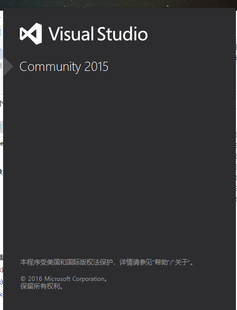
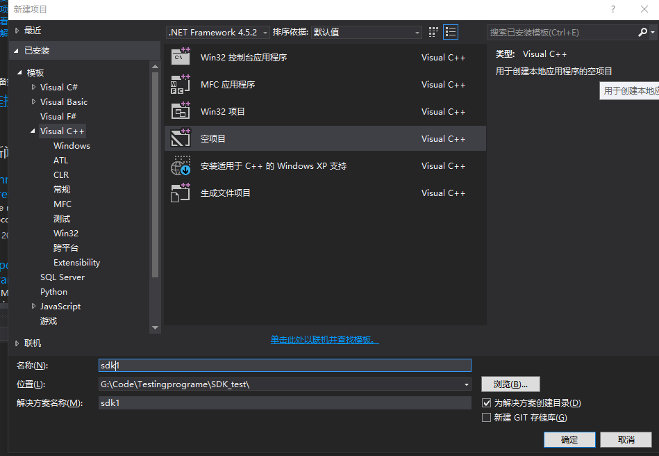
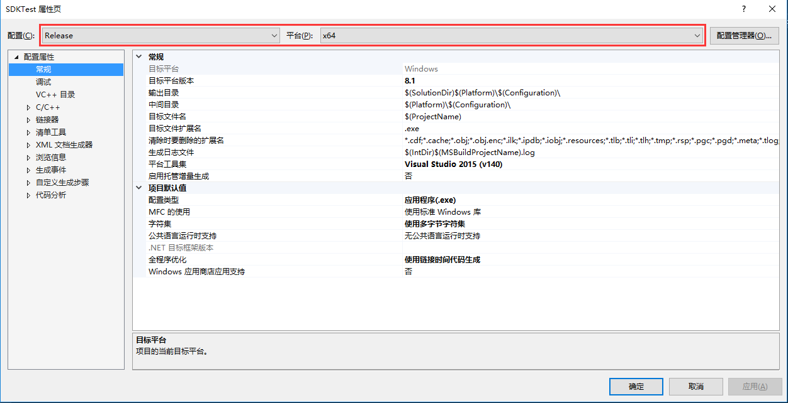
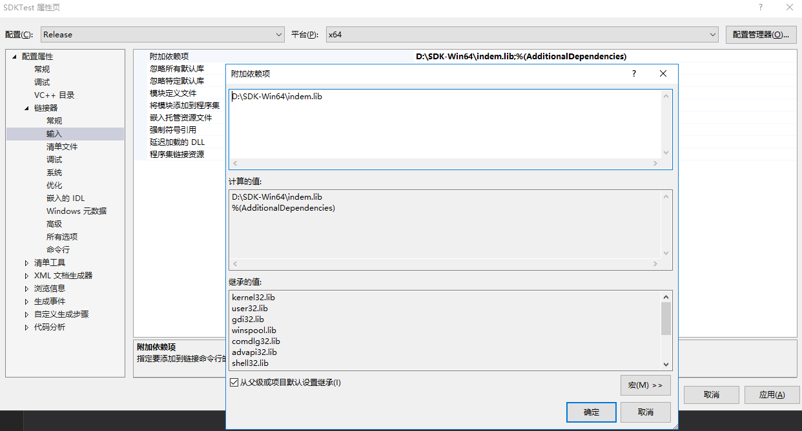
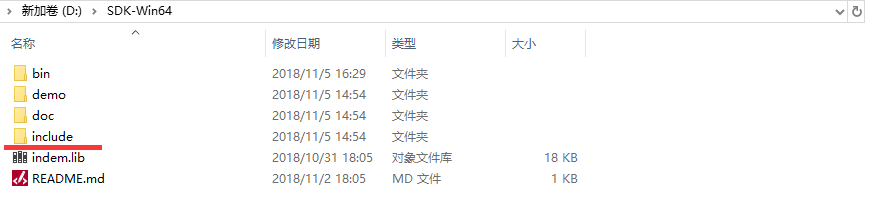
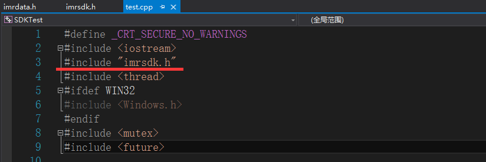

Windows SDK安装¶
该部分，我们为用户提供了所需要的相关库文件，用户只需要下载之后包含相关的库文件等即可使用。在使用Visual Studio进行开发的过程中，我们推荐使用VS2015及其以上版本，2015以下版本未经过测试。如有任何疑问，欢迎大家上github提出问题。
注解
安装必须硬件和软件 需要显卡Geforce GTX 1050 以上，并且把显卡驱动安装好，CUDA版本9.0。没有GPU，如深度解算等功能无法正常运行。
程序下载¶
小技巧
SDK主要包含：demo，doc，include、bin四个文件夹和indem.lib程序库。
demo文件夹下放置的是DEMO程序；
doc文件夹下放置的是说明文档和模组的相关测试报告；
include文件夹下面放置的是需要用到的头文件；
bin文件夹下放置的是所依赖的各部分的dll文件以及配置所用的json、yaml文件；
indem.lib文件是SDK开发所依赖的lib程序库。
如果要在自己的工程中添加SDK，需要保证自己的项目是x64平台。否则需要对自己项目进行升级才能使用。

工程创建¶
如果是新建工程，可以参考如下步骤：
打开VS2015（我们在这里较为推荐使用VS的该版本），如下图
在左侧导航栏中点击创建新项目，并指定相应的文件夹和路径，如下图
点击确定，这样我们就生成了一个空的工程。因为我们要使用刚刚下载下来的安装包中提供的lib文件，所以在这里我们需要给工程添加相应的头文件和.lib文件。因为提供的程序均为x64平台下执行代码，所以，不管在Debug，还是Release配置下，平台均需要选择X64。鼠标右击该工程名字，查看项目属性，如图SDK_4(以下均以Release x64环境为例)。
在”VC++目录 -> 包含目录”中包含刚刚下载的SDK-Win64文件夹中的include文件夹路径，以及在”VC++目录 -> 库目录”中包含indem.lib程序库所在的路径，如下图所示。


然后点击链接器—输入—附加依赖项，将具体的.lib文件添加到此处，如下图所示：
最后在程序进行重新生成前的最后一步修改，将编辑器上方的解决方案配置及平台修改为配置时设定的平台，如图：

这样一个基本环境就搭建成功了，我们可以根据需要来使用其中的方法，重写其中的方法，或者是按照需要来调用其方法了。这里需要注意的是，调用相应的方法时，需要包含有该方法定义的头文件，我们在SDK文件夹下的include文件夹中给出了我们提供的方法定义的头文件，如图所示。
在创建工程的时候，可以选择将相应需要的头文件即.h文件放置到所新建的工程目录下面，如图所示。

之后创建自己的程序文件即.cpp文件，然后在该.cpp文件中就可以开始我们的编码了，这里需要添加上必须的头文件引用，即 #include “imrsdk.h”，如下图所示。
然后创建我们自己的main函数，去初始化相应的参数就可以了，具体的初始化方法，如果你是初学者可以参照Demo中给的示例来进行理解与开发，如果你是有经验的开发者，可以查找imrsdk.h文件进行所需要函数定义的查询，来进行下一步开发。
运行时将bin文件夹里的内容拷贝到所在项目路径下即可。模组设备调试时需要使用USB3.0接口。
小技巧
用户基于SDK开发的程序，参考demo操作流程。